Examples of out-of-view VQA. OpenView synthesizes multi-choice out-of-view VQA data, featuring both
contextual and directional question types.
Empowered with OpenView, several MLLMs can largely improve their performance on out-of-view VQA, making their
capability closer to human performance.
Abstract
Recent multimodal large language models (MLLMs) show great potential in natural image understanding.
Yet, they perform well, mainly on reasoning in-view contents within the image frame. This paper presents
the first study on out-of-view (OOV) understanding, i.e., the ability to reason about objects, activities,
and scenes beyond the visible frame of a perspective view. Our technical contributions are threefold.
First, we design OpenView, a four-stage pipeline that leverages panoramic imagery for large-scale
and diverse multi-choice VQA synthesis, where full-scene coverage enables flexible view framing while
preserving global scene awareness. Second, we curate OpenView-Dataset, a high-quality synthetic
dataset from diverse real-world panoramas to empower MLLMs upon supervised fine-tuning. Third, we build
OpenView-Bench, a benchmark that jointly measures choice and rationale accuracy for interpretable
and diagnosable evaluation. Experimental results show that despite having a large gap from human performance in
OOV VQA answer selection, multiple MLLMs, upon empowered by OpenView, can consistently boost their
performance, uplifted from 48.3% to 62.3% on average.
Formulation
Out-of-view (OOV) understanding
We introduce a new MLLM understanding task: reasoning about objects, activities, and scenes
beyond the visible frame of a perspective view. It requires models to integrate visible cues, such as scene
structure, camera viewpoint, and object appearance, with contextual priors and world knowledge.
Since multiple hypotheses about unseen regions may be consistent with the observed image, we formulate it as
single-view multi-choice VQA, i.e., comparative plausibility reasoning among a small set of candidate hypotheses.
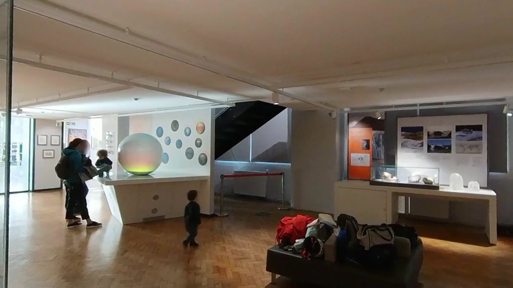
Input: a single perspective view An example from OpenView-Dataset; rationales abridged.
Contextual · Culture scene
Which of the following sets of objects would most likely appear outside of this view?
A
Interactive touch screens and additional infographic panels.
Rationale:Highly plausible in this educational museum setting, complementing the existing display format.
candidate
B
A large aquarium with marine life displays.
Rationale:Could relate to the tsunami theme, but seems too large and unrelated to the exhibit style.
candidate
C
Artisanal souvenirs and gift shop merchandise.
Rationale:Plausible, but less consistent next to an educational exhibit than more educational material.
candidate
D
Sports equipment like basketball hoops and soccer nets.
Rationale:Lacks connection to the educational theme about natural disasters.
candidate
E
None of the above.
Rationale:Unlikely, since A presents a strong case.
Assess whether objects, attributes, or conditions are plausible beyond the visible region.
“Which type of feature would be least plausible to find outside the current view?”
Directional questions
Emphasize spatial continuity under explicit changes in camera view direction.
“After tilting the camera down about 40°, what would most likely appear in view?”
Interactive Demo
Can you reason beyond the frame?
Like the models, you see only a single perspective view. Pick a scene and answer its question.
The view then expands into the full 360° panorama so you can check your answer.
This crop is all the model sees.
Rationale & full panorama
Full 360° panorama. The red frame marks
the perspective view you were shown.
Method
The OpenView pipeline
Cropping subviews from ordinary images leaves question design without the full scene context.
Panoramas instead provide full 180°×360° views of the target environments, enabling flexible
view selection while preserving global scene awareness. OpenView is an automatic four-stage pipeline: a
data preprocessor for panorama filtering, a visual analyzer for semantic and spatial annotation,
a proposal generator for constructing VQAs, and a proposal refiner for quality assurance and augmentation.
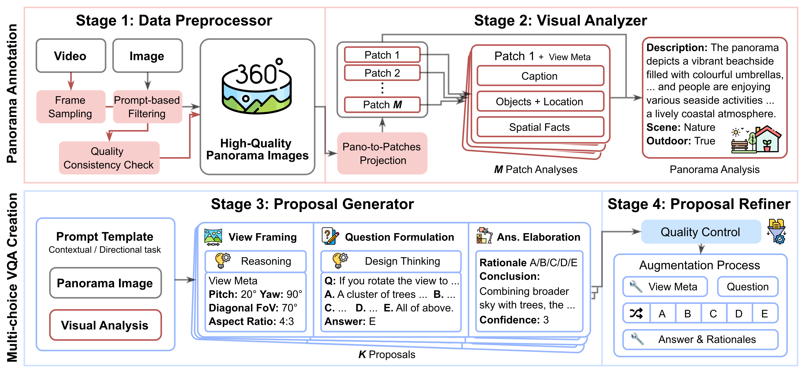
Dataset & Benchmark
OpenView-Dataset
Generated with the OpenView pipeline, OpenView-Dataset contains over 158k
realistic multi-choice OOV VQAs from 16k filtered panoramas, spanning a broad range of real-world scenarios.
158k
synthetic OOV VQAs
16k
filtered panoramas
11
scene categories
5
public panorama sources
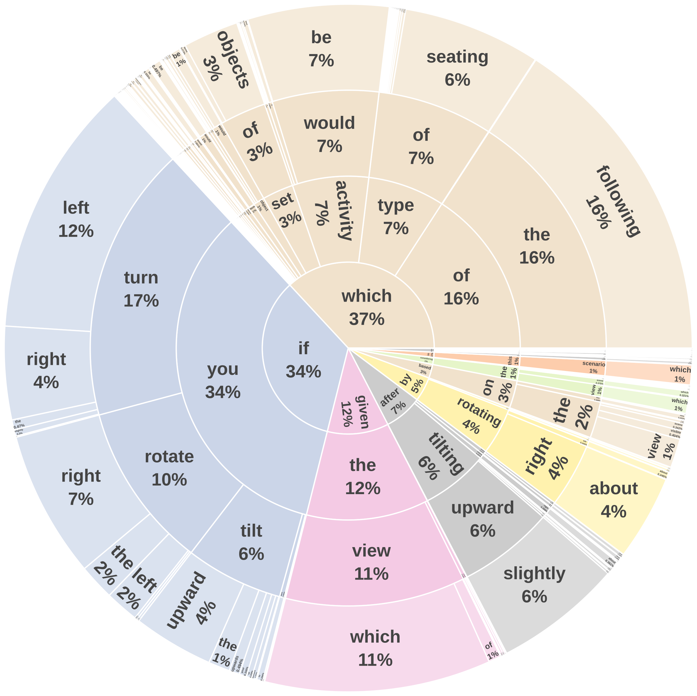
Question patterns exhibit high linguistic consistency, guiding the model to focus on OOV understanding.
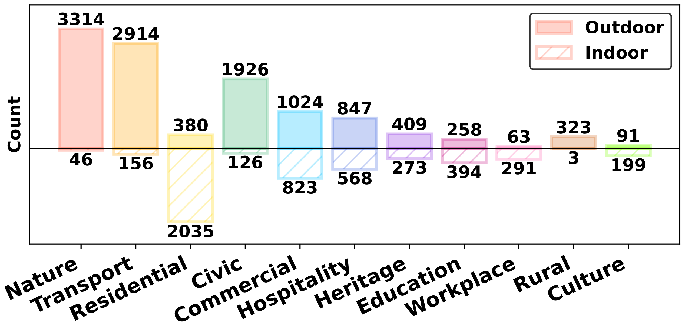
Scene category distribution across indoor and outdoor environments, showing broad coverage of real-world scenarios.
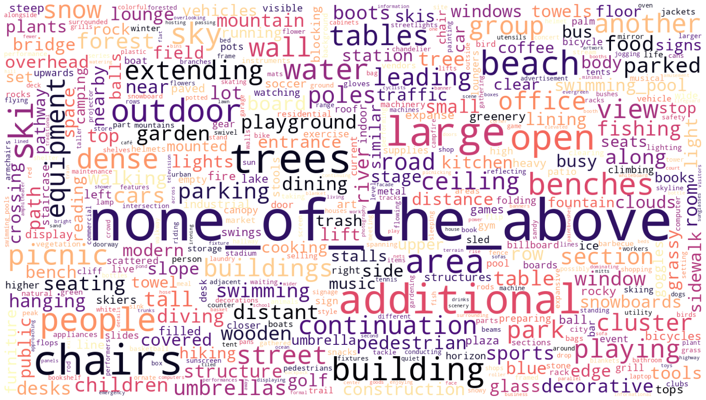
The option word cloud reveals diverse object and scene terms.
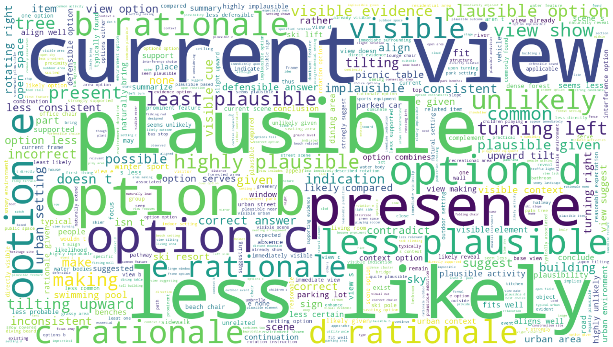
The rationale word cloud highlights recurring reasoning phrases.
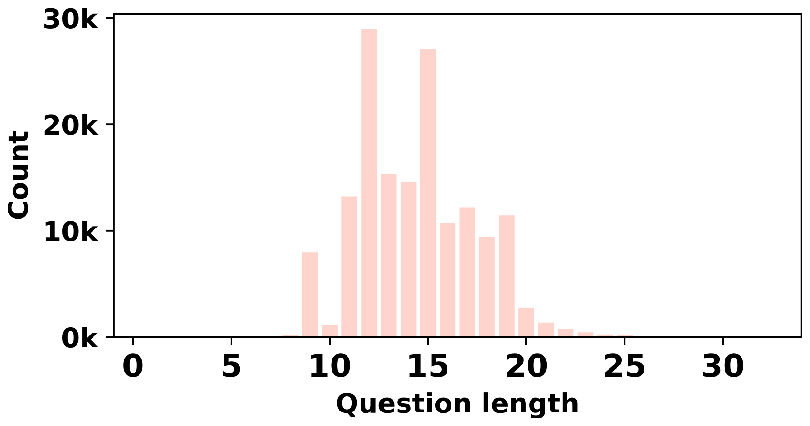
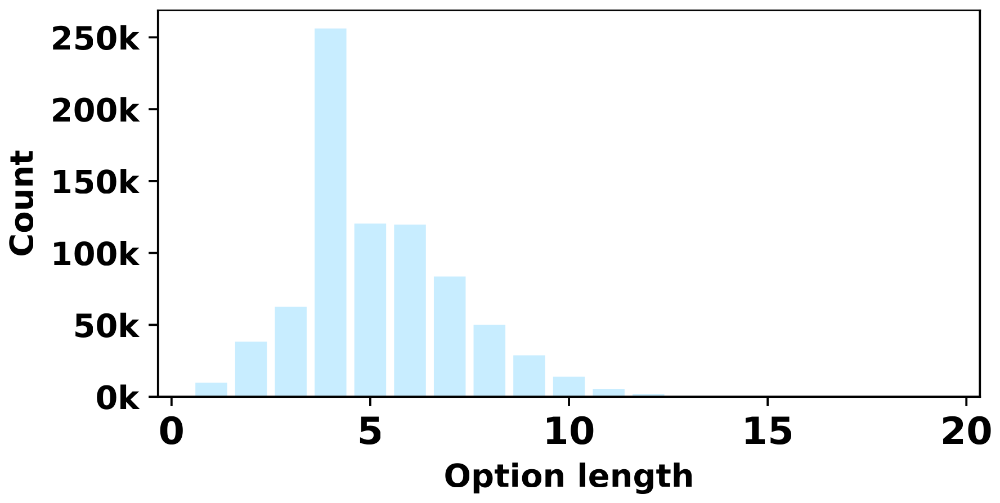
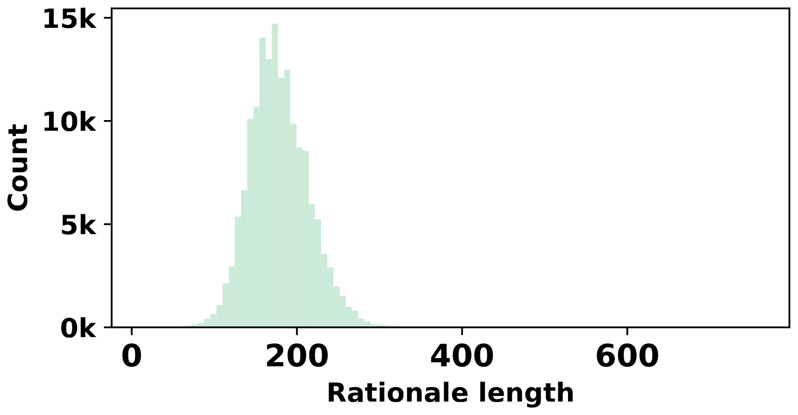
Word length distributions for questions, options, and rationales.
OpenView-Bench
A manually-verified benchmark curated from panoramas explicitly excluded
from training, comprising 1,155 high-quality OOV VQAs with balanced task difficulty, scene coverage and answer distribution.
1,155
manually verified VQAs
77
panoramas, 7 per scene category
580 / 575
contextual / directional
86.0%
human choice accuracy (Fleiss' κ = 0.82)
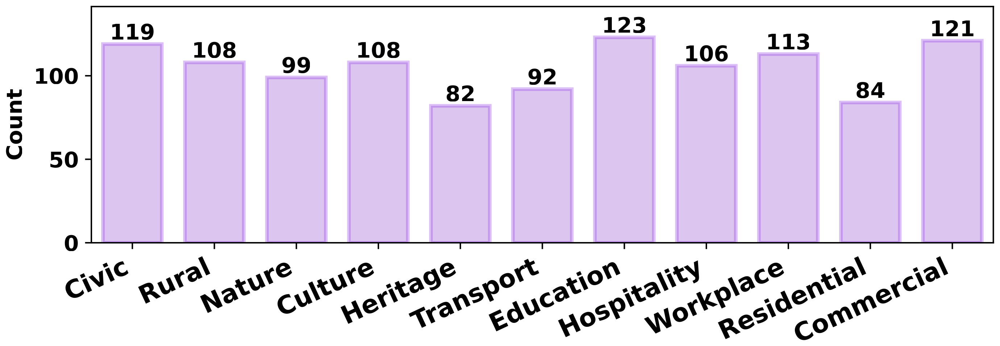
Distribution of scene categories across VQAs in OpenView-Bench.
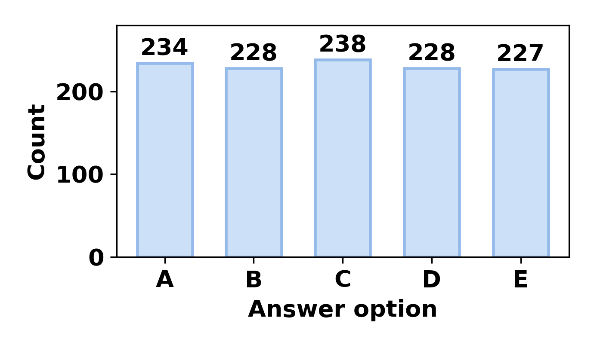
Answer distribution across the five options.
Results
Evaluation on OpenView-Bench
A substantial gap is evident between humans and MLLMs. While humans surpass 83% choice accuracy
across both task types, model accuracies still fall short of this level. Considering rationale evaluation
reveals a lower joint accuracy, particularly in directional tasks.
Choice accuracy
The proportion of correctly-selected options among all the questions.
Rationale accuracy
The reliability of the model in justifying the correctly-chosen answers through reasonable option-wise explanations, judged by GPT5-mini against human-revised rationales.
Joint accuracy
The proportion of questions for which both the selected answer and its rationale are correct.
Model
Rank
Contextual
Directional
Overall
Choice
Rationale
Joint
Choice
Rationale
Joint
Choice
Rationale
Joint
Human-level
–
83.02
–
–
89.58
–
–
86.00
–
–
GPT-4o†
–
64.14
–
–
41.74
–
–
52.99
–
–
GPT-5†
–
63.79
–
–
44.52
–
–
54.20
–
–
Proprietary models
GPT-4o-mini
9
63.10
93.99
59.31
48.35
87.05
42.09
55.76
90.99
50.74
GPT-4o
6
71.72
83.89
60.17
55.83
89.41
49.92
63.81
86.30
55.07
Gemini-3-flash
8
77.59
78.89
61.21
62.43
70.19
43.82
70.04
75.03
52.55
GPT-5
2
70.86
91.73
65.00
57.04
95.43
54.43
63.98
93.37
59.74
GPT-5.4
1
70.52
99.02
69.83
59.30
96.48
57.21
64.94
97.87
63.56
Open-source models
LLaVA-NeXT-Mistral-7B
17
42.07
39.34
16.55
29.04
29.94
8.69
35.58
35.52
12.64
GLM-4.1V-9B-Base
14
56.38
87.46
49.31
42.78
79.10
33.84
49.61
83.89
41.62
GLM-4.1V-9B-Thinking
11
52.41
92.11
48.27
45.04
90.73
40.86
48.74
91.47
44.58
InternVL3.5-8B
12
56.90
90.00
51.21
45.39
79.69
36.17
51.17
85.45
43.72
InternVL3.5-8B‡
15
49.48
82.58
40.86
42.26
85.60
36.17
45.89
83.96
38.53
Qwen3-VL-8B-Instruct
10
58.10
94.96
55.17
48.35
90.65
43.83
53.25
93.01
49.53
Qwen3-VL-8B-Thinking
7
67.41
91.05
61.38
49.57
91.23
45.22
58.53
91.12
53.33
Ovis2.5-9B
16
66.21
65.89
43.63
43.65
66.14
28.87
54.98
65.98
36.28
MiniCPM-V 4.5
3
68.79
93.23
64.13
57.04
89.33
50.95
62.94
91.47
57.57
Qwen2.5-VL-3B-Instruct
18
57.93
13.99
8.10
44.70
12.06
5.39
51.34
13.15
6.75
Qwen2.5-VL-7B-Instruct
13
61.03
81.36
49.65
45.39
76.63
34.78
53.25
79.35
42.25
Qwen2.5-VL-32B-Instruct
4
66.38
95.58
63.45
53.22
94.12
50.09
59.83
94.93
56.80
Qwen2.5-VL-72B-Instruct
5
68.10
95.70
65.17
51.13
92.52
47.31
59.65
94.34
56.27
Results are reported as percentages, with models ranked by the overall joint accuracy.
The best results among all models and within open-source models are highlighted in
red and light red, respectively.
†Description-based test setting. ‡Thinking mode enabled.
What makes OOV difficult?
We analyze the responses of six representative models from different
performance tiers and categorize the errors into two primary types.
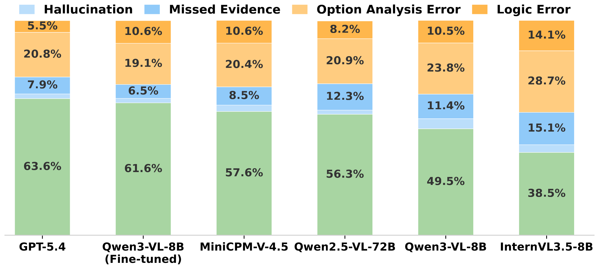
Left: Breakdown of error cases across models.
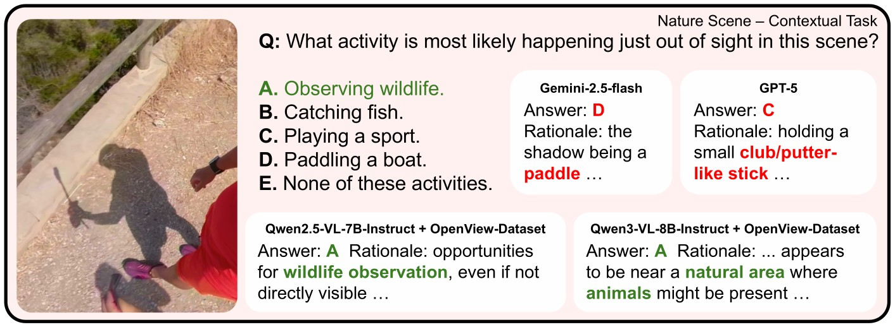
Right: An example test case. Baseline MLLMs misinterpret the scene, while fine-tuned models correctly infer the unseen activity.
Perception limitation
Missed evidence, where key objects or cues present in the frame are overlooked, and
hallucination, where models generate descriptions inconsistent with the actual image content.
Reasoning limitation
The dominant failure mode, accounting for approximately 70% of all errors across models:
option analysis errors in assessing each candidate against the visual context, and
logic errors where final selections contradict the model's own preceding analysis.
OpenView-Dataset guides MLLMs with consistent improvements
We fine-tune four open-source MLLMs on OpenView-Dataset. Supervised
fine-tuning yields substantial gains across all models; notably, the overall joint accuracy of
LLaVA-NeXT-Mistral-7B increases from 12.64% to 54.63%. After fine-tuning, Qwen3-VL-8B-Instruct achieves the
strongest overall OOV performance among open-source models.
Model
Contextual
Directional
Overall
Choice
Rationale
Joint
Choice
Rationale
Joint
Choice
Rationale
Joint
% gain
LLaVA-NeXT-Mistral-7B
42.07
39.34
16.55
29.04
29.94
8.69
35.58
35.52
12.64
↑ 332%
+ OpenView-Dataset
71.55
90.84
65.00
49.57
89.12
44.18
60.61
90.14
54.63
InternVL3.5-8B
56.90
90.00
51.21
45.39
79.69
36.17
51.17
85.45
43.72
↑ 18%
+ OpenView-Dataset
66.03
90.86
59.99
48.00
89.13
42.78
57.06
90.14
51.43
Qwen2.5-VL-7B-Instruct
61.03
81.36
49.65
45.39
76.63
34.78
53.25
79.35
42.25
↑ 39%
+ OpenView-Dataset
72.76
93.36
67.93
56.00
87.89
49.22
64.42
90.99
58.62
Qwen3-VL-8B-Instruct
58.10
94.96
55.17
48.35
90.65
43.83
53.25
93.01
49.53
↑ 24%
+ OpenView-Dataset
77.07
93.29
71.90
57.22
89.36
51.13
67.19
91.62
61.56
The final column reports the relative improvement in overall joint accuracy. Gains are highlighted
in blue and minor rationale drops in gray.
Cross-paradigm generalization to MindCube
Training on single-view plausibility comparison also improves multi-view 3D
spatial reasoning on MindCube, indicating that the visual reasoning skills induced by OpenView-Dataset are
transferable beyond its training paradigm.
Model
Overall
Rotation
Among
Around
Qwen2.5-VL-7B-Instruct
31.02
37.28
31.06
27.02
+ OpenView-Dataset
37.73
39.50
38.65
27.72
Δ
+6.71
+2.22
+7.59
+0.70
Qwen3-VL-8B-Instruct
29.23
35.25
29.48
23.27
+ OpenView-Dataset
41.50
35.62
43.05
29.86
Δ
+12.27
+0.37
+13.57
+6.59
Performance on the MindCube benchmark. Fine-tuning on OpenView-Dataset improves performance across all question types.
Application
Informative descriptions for panorama outpainting
We prompt Qwen3-VL-8B-Instruct and its fine-tuned variant to describe the conditioned image and
iteratively infer adjacent views by rotating 45° to the right, forming a closed viewing loop. The resulting
multi-view descriptions condition image&text-conditioned panorama generation with MVDiffusion.
Drag the slider to compare the two.
⇔
+ OpenView-Dataset
Base model
The base model often repeats references to objects from the conditioned view, whereas the fine-tuned
model produces more informative and spatially coherent descriptions by introducing plausible unseen objects,
resulting in more complete scene interpretations.
BibTeX
If you find OpenView useful or relevant to your research, please consider citing our paper 😊
@article{chen2025openview,
title={OpenView: Empowering MLLMs with Out-of-view VQA},
author={Chen, Qixiang and Zhang, Cheng and Fu, Chi-Wing and Ye, Jingwen and Cai, Jianfei},
journal={arXiv preprint arXiv:2512.18563},
year={2025}
}